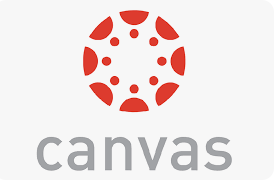

Canvas Uitleg
Cursussen
- In Canvas vind je een overzicht van al je cursussen.
- Binnen elke cursus zie je informatie zoals leerdoelen, opdrachten, studiemateriaal, en de planning van de lessen.
- Het helpt je om precies te weten wat je moet leren en wanneer alles af moet zijn.
Kalender
- De Canvas-kalender geeft een handig overzicht van alle belangrijke data, zoals deadlines, toetsen, en lessen.
- Alles uit je cursussen wordt automatisch toegevoegd aan je kalender.
- Je kunt ook eigen afspraken toevoegen om je planning beter te beheren.
Inbox
- Via de inbox in Canvas kun je berichten sturen naar je docenten en medestudenten.
- Het werkt als een intern berichtenplatform voor snelle en eenvoudige communicatie.
Canvas-app
- Met de Canvas-app heb je altijd toegang tot je cursusinformatie, lesmateriaal en berichten.
- Je kunt overal en altijd inloggen, of je nu onderweg bent of thuis.
Canvas-app voor ouders
- De Canvas-app voor ouders maakt het mogelijk om de voortgang van je kind te volgen.
- Ouders kunnen ingediende opdrachten en behaalde cijfers zien zonder in te loggen met het account van hun kind.
